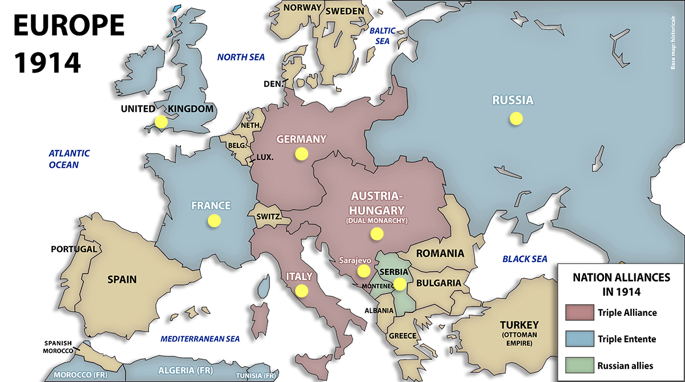
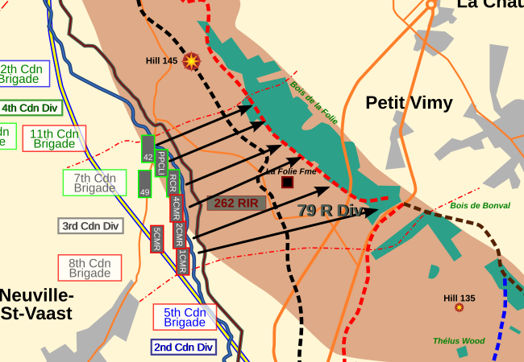
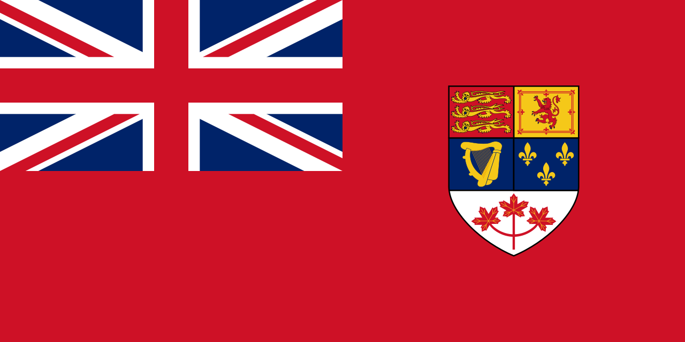

What was WW1?
The First World War, better known as the Great War, was a devastating conflict that rocked the world between 1914 and 1918. It was a war between two opposing alliances: the Central Powers, including Germany, Austria-Hungary, and the Ottoman Empire, and the Allied Powers, comprising Britain, France, Russia, and later the United States. The war was quite largely triggered by the assassination of Archduke Franz Ferdinand of Austria, which sparked intense tensions and a sequence of events eventually leading to the world being plunged into chaos. The First World War was characterized by brutal fighting and the introduction of new technologies, such as airplanes, tanks, and machine guns, which revolutionized warfare. Millions of lives were lost, while many others were wounded or left homeless. The war left a immense impact on politics and society in Europe, leading to the collapse of major empires and the rise of new regimes. It serves as a great reminder of the horrors of war and the importance of peaceful coexistence among nations.

The defining moment for Canada
Canadians played a critical role in World War I, participating in several crucial battles that ultimately shaped the modern world. However, the Battle of Vimy Ridge stands out as one defining moment as it was the first time Canadians led a successful battle in the trenches and utilized a Canadian-developed strategy, the Creeping Barrage, which involved a continuous artillery bombardment on the enemy lines, allowing troops to advance safely. This was a crucial victory for Canadians, as it marked the first time they achieved success on their own terms. The battle was led by Canadian General Sir Julian Byng and involved more than 100,000 Canadian soldiers.
This victory at Vimy Ridge was a major symbolic victory for Canadians. It demonstrated that Canada was a capable and independent nation on the world stage. The Battle of Vimy Ridge forever changed the course of Canada's history, solidifying its status as a nation capable of great feats on the battlefield. The Battle of Vimy Ridge will always be remembered as a moment that transformed the nation's reputation and showed the world the strength and bravery of Canadians.


How did Canada change and stay the same?
Through WWI, Canada has undergone significant changes, growing in autonomy and sovereignty from the British Empire. This has been driven by Canada's participation in the Great War in battles such as the previously mentioned, battle for Vimy Ridge, and their inclusion in important documents such as the Treaty of Versailles under the British signature. Despite these efforts to assert their independence, Canada has continued to be subject to the United Kingdoms. Another issue that survived the ravages of war was the Anglo-French tensions which live until this day, maybe to a lesser extent. Overall Canada grew as a nation in independence and strength even with some issues remaining.
